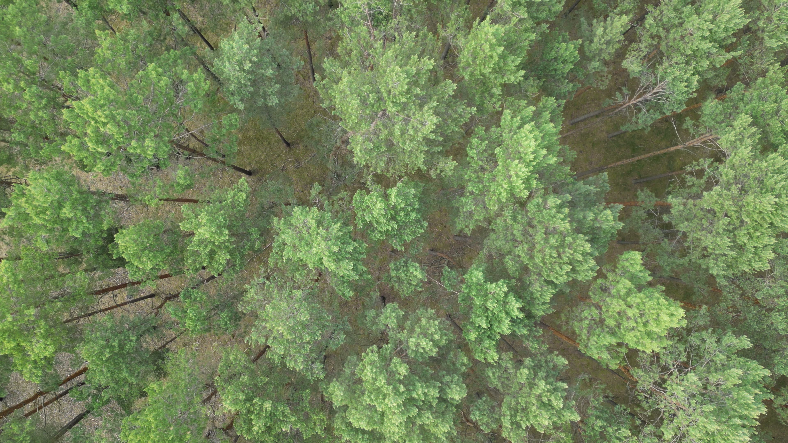
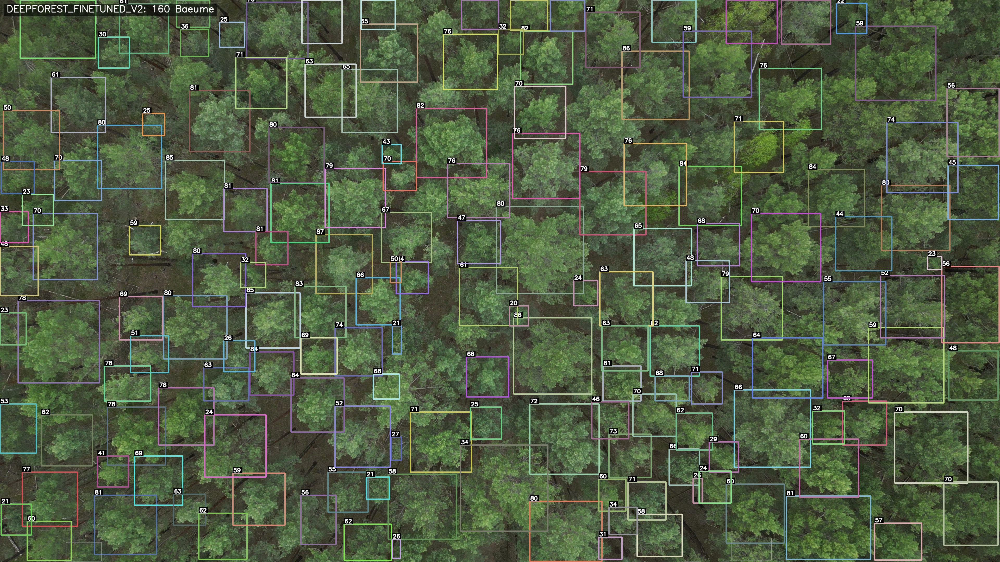
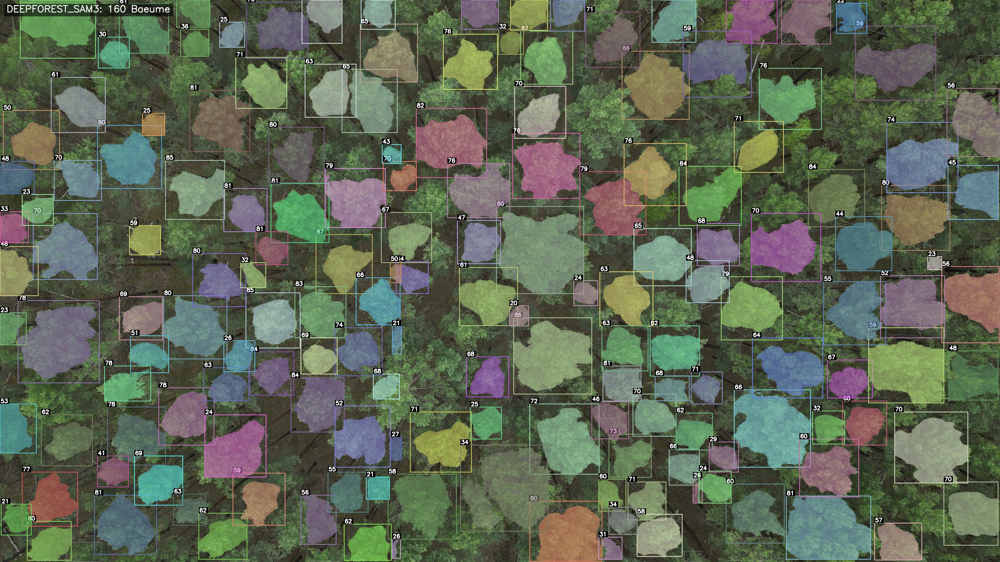
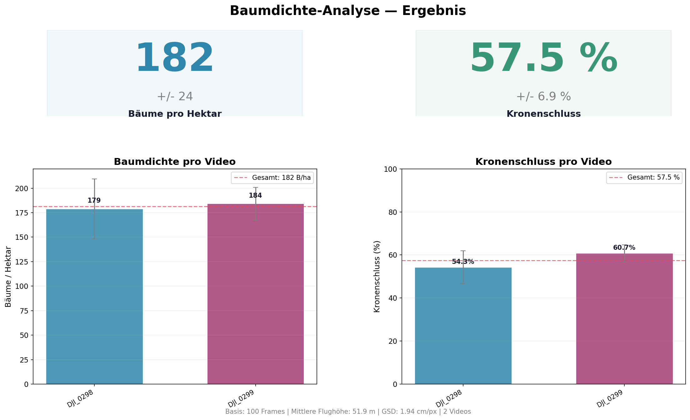
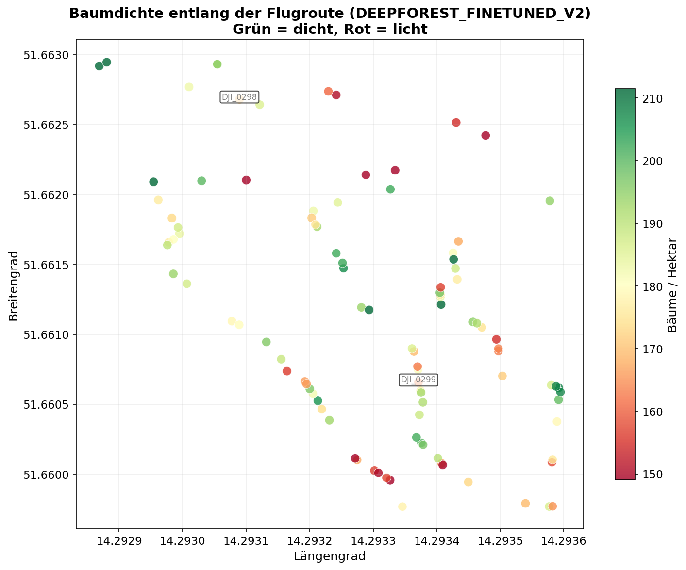

Den Wald
von oben
zählen
Automatische Baumdichte-Bewertung aus Drohnenvideos.
Im
Unterholz
Ein Kiefernforst in Brandenburg. Tausende fast gleiche Kronen, von Hand nicht zu zählen.
Die Forstwirtschaft braucht zwei Zahlen: Bäume pro Hektar und Kronenschluss. Sie steuern Hiebsplanung und Monitoring. Dafür reicht hier ein ganz normales RGB-Drohnenvideo und ein einziger Flug.
Über
dem
Blätterdach
Die Drohne steigt auf 50 Meter. Aus dem Wald wird eine Karte.
DJI Mini 3 Pro, Kamera senkrecht nach unten, 4K. Die Ground Sample Distance übersetzt Pixel in Meter: rund 1,9 cm pro Pixel. Eine drei Meter weite Krone liegt damit auf weit über hundert Pixeln. Aus dem Video bleiben nur die stabilen, senkrechten Frames.

Jeder
Baum,
gezählt.
Eine KI liest den Wald: erst Boxen, dann pixelgenaue Masken.
Auf eigenen, von Hand annotierten Frames fine-getunt, findet das Modell jede Krone als Box. SAM 3 macht daraus pixelgenaue Masken, aus denen Kronenfläche und Kronenschluss folgen.




Was ein Förster in Tagen abschreitet, liest die Pipeline in Minuten.